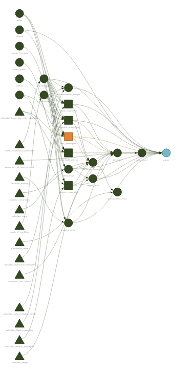
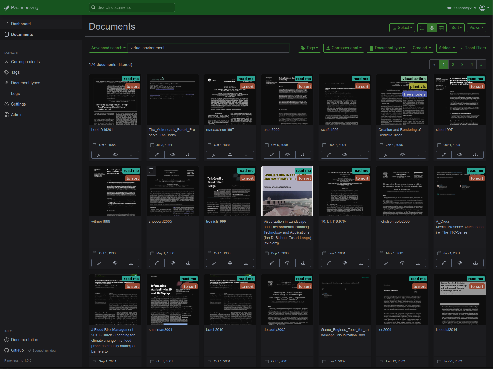
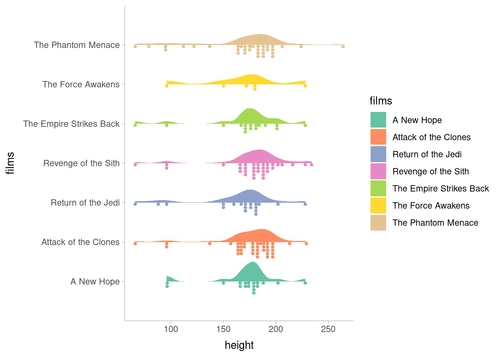
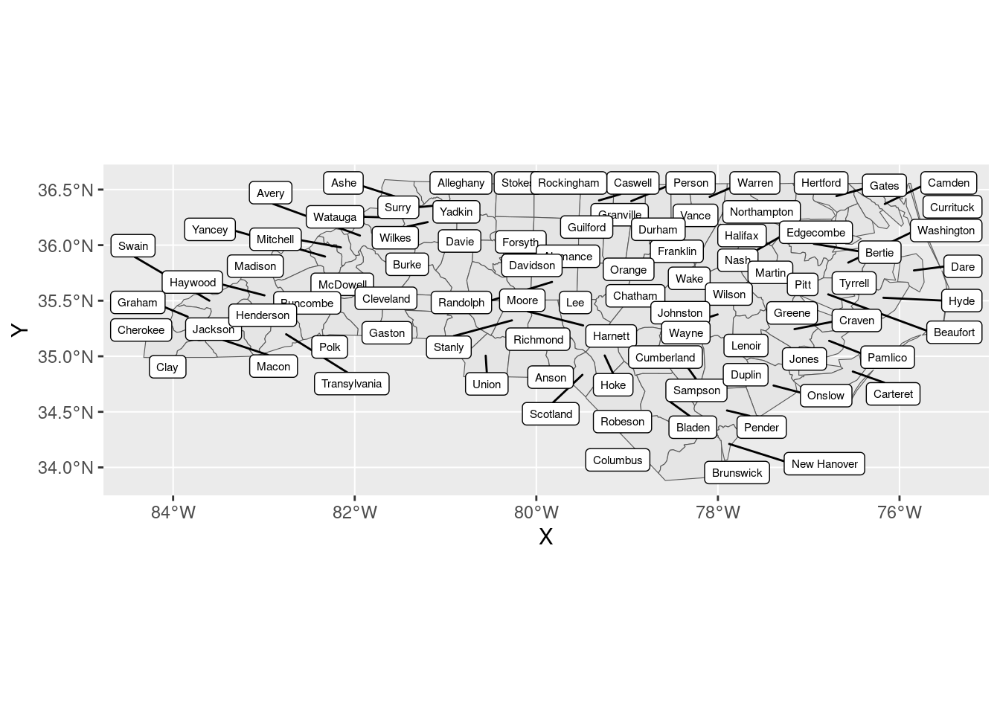
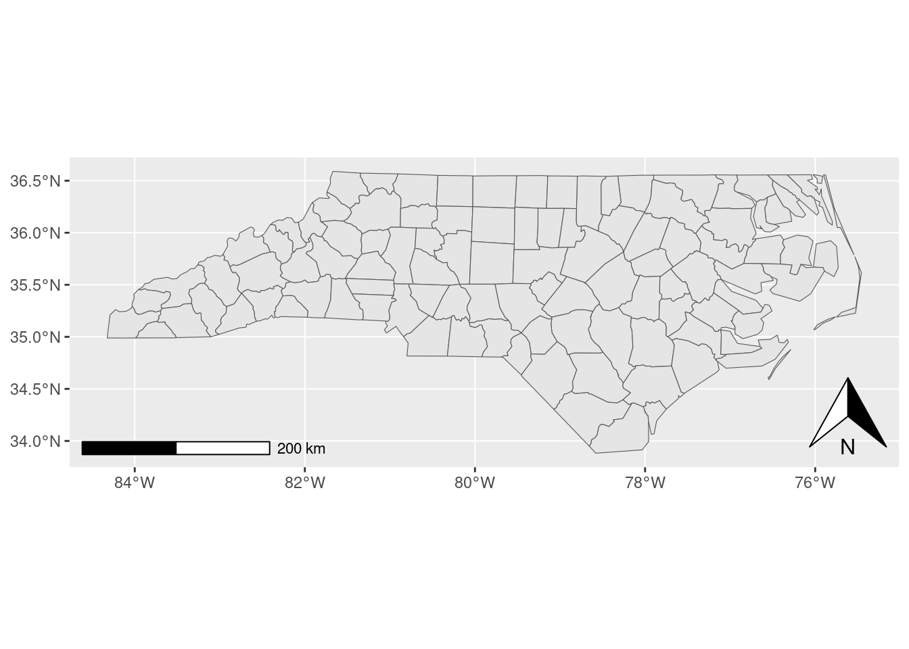
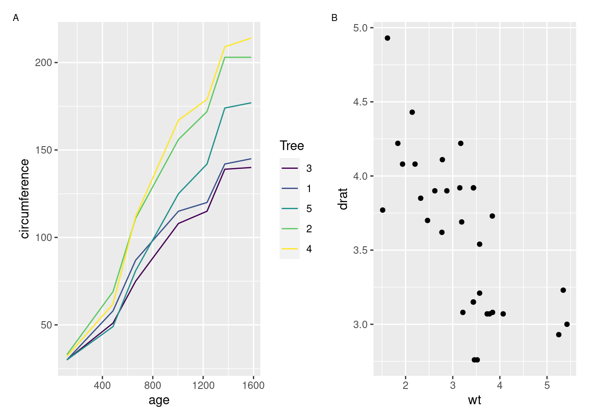
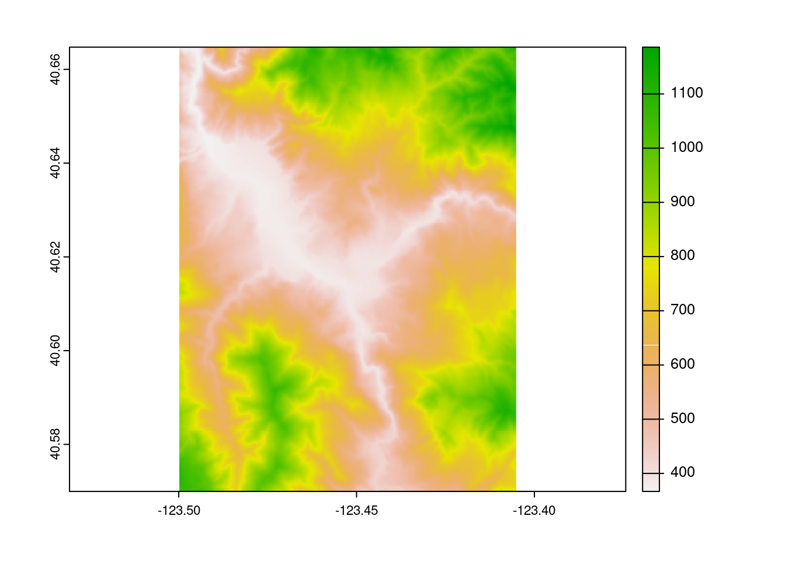
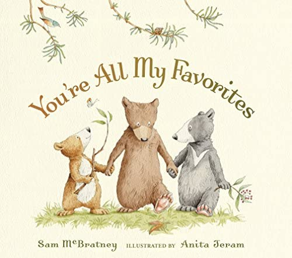

intense_function <- function(...) {
list_to_iterate_over <- list(...)
lapply(
list_to_iterate_over,
some_intensive_processing_function
)
}One of the problems with open source development is that it’s the engineering equivalent of yelling into the void. Once your code is released, it’s really, really hard to know if anyone actually uses your tool. You might be able to track download numbers,1 but there’s almost no way to tell how many of those downloads are actual users, and how many are from automated webscrapers, unofficial mirrors, or people who will try to use your software once before giving up and moving on to something else.2 The best information about how many people use your software is, basically, how much you hear people talking about your software.
The problem is that, for the majority of open source projects, you’ll only hear people talk about your software when it’s pissing someone off. People don’t generally open issues on GitHub to tell you they love your work,3 but rather to tell you that your work messed up in a big enough way that they’re going to spend time writing you letters about it. On my more meditative days, I’m able to look at issues as “someone cares enough about this project to spend their time telling me what they think would improve it”; on my more human ones, it can feel like someone sharing a public list of my mistakes.4
So, with all this in mind and full up on the holiday spirit, I’m putting here a non-exhaustive list of the open-source tools that I loved this year, in no particular order, with a bent towards independent developers and smaller projects. These are primarily R projects, with a few other tools thrown in. Apologies to anyone I’ve forgotten; please know that you would not know I had ever used your software if I didn’t love it.
Workflow
targets by Will Landau
Every so often you stumble across a project that makes it obviously, blindingly clear that you’ve been doing things wrong this whole time. Sometimes this means finding out that your efforts have been wrong, and you’ve been doing things incorrectly up until now; more exciting are the times you realize you haven’t been doing anything wrong per se, but could be doing things so much better.
The targets package is a peak example of the latter. The ways analyses are usually structured – cells of a single notebook, shell scripts that run a smattering of individual files, cludgy Make files – are fine, and serve a purpose, and there’s nothing wrong with them. There’s just a better way. And targets is that better way.
Rather than making you define the dependencies between your analysis steps yourself, targets will automatically calculate your project’s DAG and run your scripts in the order they need to be executed. If you change a script, or files change on disk, targets will invalidate only the steps that need to be re-run under the new conditions, and will run only those steps on your next go. This alone is incredible.
But targets does so much more than that. My personal needs have meant I’ve spent a lot of time with targets’ dynamic branching mechanism, where you can tell targets to execute a script against various combinations of input parameters, massively reducing the amount of actual code you need to write. There’s plenty of additional bells and whistles attached for dealing with distributed computing and cloud data environments. Plus, there’s tons of metrics and instrumentation available to watch your DAG as it executes, and the visuals produced by the package are beautiful:

Part of the joy of targets is just how well-documented the package is. There’s a website. There’s an entire book. Will has set an incredibly high bar for the rest of us.
Paperless-ng by Jonas Winkler
A docker container runs on a small server in my living room,5 running my instance of Paperless-ng. When I save a new article to its “input” folder, the container OCR’s the document and moves it to a safe storage location, giving it the appropriate “tags” and making it accessible with the rest of the papers I’ve ever shown an interest in.

Paired with a VPN6, this means I can access my entire reference library from anywhere I go, from any device I own, with access to full-text search and any notes I’ve taken. This is one of the outright best hacks I have ever found for literature searches; I have access to a personally-curated Google Scholar filled with the sources that I have found relevant in the past, which makes finding the proper citation or reference document a breeze. If you’re a certain breed of nerdy academic, I can’t recommend it enough.
future and progressr by Henrik Bengtsson
My research group is split across folks who use Windows, MacOs, and Linux, and we need to share code a lot. That makes relying on system features, like multi-core processing via mclapply() in the parallel package, rather fraught.
Our solution to that problem is the future package, which provides functions for parallel computing which function across OSes. That alone merits a spot on this list. But even more than that, I’m a huge fan of the philosophy behind the future package.
Say for instance you’re developing a package – or writing a script for a coworker, or generally writing code that you will not be executing yourself. Your code looks something like this:
You have no idea what else your user will be doing when you execute this. Maybe they’re busy running a more important job that needs most of their RAM, or maybe your script can safely use all their computing resources; while writing your function, you can’t know. For that reason, you don’t want to enable parallelism by default.
So what do you do? Let the user decide how parallel they want your code to be. If you write your code using packages from the future family, your users can use the plan() function to specify how much parallelism they’re comfortable with your script using. And gaining that amount of flexibility requires a one-line change:
intense_function <- function(...) {
list_to_iterate_over <- list(...)
future.apply::future_lapply(
list_to_iterate_over,
some_intensive_processing_function
)
}You don’t need to write any logic around parallelization; all of that work gets outsourced to future.
For similar reasons, I really like the progressr package that’s part of the future ecosystem. Adding progress bars is as simple as specifying how many iterations you’re expecting to do, and when the bar should update:
iteration_function <- function(n = 10) {
p <- progressr::progressor(n)
lapply(
seq_len(n),
\(x) {
p(message = sprintf("On iteration %f", x))
Sys.sleep(0.1)
}
)
invisible(NULL)
}And then all the rest is left to the user. They can use whatever sort of progress bar they find useful, or none at all – you don’t need to be a part of that decision whatsoever:
progressr::handlers("txtprogressbar")
progressr::with_progress(
iteration_function()
)units by Edzer Pebesma
I’m gonna be honest, this is a weird one for the workflow section. But at the same time, the units package has become something I load in almost every project I work on. If you’re doing anything that might have unit conversions, this package can be a lifesaver.
For instance, let’s take an actual example from a project I worked on last week. Say you’ve run some samples through an ICP machine, and need to calculate how much of a given analyte7 is in your sample.
To do that, you’ve got three numbers: the concentration of the analyte in the solution you ran through the ICP in units of milligrams per liter, the amount of solution you used in units of milliliters, and the amount of sample in the solution in grams. Your target is the amount of analyte per amount of sample, in units of milligrams per gram. This is simple dimensional analysis8, and you set up your equations like so:
concentration_mg_per_L <- 1.68
sample_weight_g <- 0.29
solution_volume_mL <- 53.54
solution_volume_L <- solution_volume_mL / 1000
concentration_mg <- concentration_mg_per_L / solution_volume_L
concentration_mg / sample_weight_g[1] 108.2014See the bug?
This is the sort of thing that can kill an analysis; silent logic bugs that execute fine but invalidate all of your results. If we tag our measurements with the units they represent, however, it’s a little bit easier to see what went wrong here:
concentration_mg_per_L <- units::set_units(1.68, "mg / L")
sample_weight_g <- units::set_units(0.29, "g")
solution_volume_mL <- units::set_units(53.54, "mL")
concentration_mg = concentration_mg_per_L / solution_volume_mL
concentration_mg / sample_weight_g0.0001082014 [1/L/mL]The units package automatically converts between units, which means we can get rid of the manual conversion from milliliters of solution into liters. The package also tells us what units our results are in following calculation. Here we can see that our results aren’t in the units we’re after – we want a concentration (amount of analyte per unit of sample), not something measured in “1 per liter per milliliter”.
This tips us off that we made a mistake in our conversions somewhere, and indeed we flipped an operand – rather than dividing our concentration by the amount of solution, we need to multiply it:
concentration_mg = concentration_mg_per_L * solution_volume_mL
concentration_mg / sample_weight_g0.0003101628 [1]That gives us our desired concentration: the number of grams of analyte per gram of sample. We can easily convert that to other forms using the units package; for instance, we tend to work with concentrations in units of milligram of analyte per gram of sample:
(concentration_mg / sample_weight_g) |> units::set_units("mg / g")0.3101628 [mg/g]But we can be even more explicit than that. The units package lets us install our own units, which lets us tag what these numbers are a gram of. That means that we can automatically see that our results are natively a ratio of total analyte per unit of sample:
units::install_unit("analyte")
units::install_unit("sample")
units::install_unit("solution")
concentration_mg_per_L <- units::set_units(1.68, "(mg * analyte) / (L * solution)")
sample_weight_g <- units::set_units(0.29, "g * sample")
solution_volume_mL <- units::set_units(53.54, "mL * solution")
concentration_mg = concentration_mg_per_L * solution_volume_mL
(concentration_mg / sample_weight_g)0.0003101628 [analyte/sample]And we can purposefully convert that to units of miligrams of analyte per grams of sample, in a very explicit way:
(concentration_mg / sample_weight_g) |>
units::set_units("(mg * analyte) / (g * sample)")0.3101628 [analyte*mg/g/sample]This erases an entire category of bugs, and has been big for me this year. The tidyverse team talks a lot about the idea of trying to help people fall into a “pit of success” – that tools should make it very easy to do things right, and very hard to do things wrong. The units package feels like a fantastic example of the concept.9
Visualization
ggdist by Matthew Kay
I think I am extremely, extremely late to the ggdist party. But that’s okay, because ggdist is extremely, extremely good; there’s plenty to party about.
I really feel like the best advertisement for this package is the package website; the basic demonstration graphs on that page are beautiful. The toy example plots look better than some10 of my published figures.
dplyr::starwars |>
tidyr::unnest(films) |>
ggplot2::ggplot(
ggplot2::aes(x = height, y = films, fill = films)
) +
ggdist::stat_slab(scale = 0.5) +
ggdist::stat_dotsinterval(
side = "bottom",
scale = 0.5,
interval_alpha = 0,
point_alpha = 0,
slab_size = NA
) +
ggplot2::scale_fill_brewer(palette = "Set2") +
ggdist::theme_ggdist()
ggdist is a late addition to my arsenal; I used it to make graphs while revising a manuscript and was immediately hooked. The toolkit ggdist provides is incredibly flexible, enabling both dozens of radically different representations of the same data as well as the infinite infinitesimal tweaks that we all obsess over to get our graphs just right. I’m a huge fan so far.
kableExtra by Hao Zhu
A confession: every two months11 I try a new package for making tables,12 use it for a week, and immediately go back to kableExtra. There’s just really nothing like it for consistent, professional, beautiful, and controllable tables, particularly for PDF documents.
mtcars |>
head() |>
kableExtra::kbl() |>
kableExtra::kable_styling(
bootstrap_options = c("striped", "hover", "condensed"),
fixed_thead = TRUE
)| mpg | cyl | disp | hp | drat | wt | qsec | vs | am | gear | carb | |
|---|---|---|---|---|---|---|---|---|---|---|---|
| Mazda RX4 | 21.0 | 6 | 160 | 110 | 3.90 | 2.620 | 16.46 | 0 | 1 | 4 | 4 |
| Mazda RX4 Wag | 21.0 | 6 | 160 | 110 | 3.90 | 2.875 | 17.02 | 0 | 1 | 4 | 4 |
| Datsun 710 | 22.8 | 4 | 108 | 93 | 3.85 | 2.320 | 18.61 | 1 | 1 | 4 | 1 |
| Hornet 4 Drive | 21.4 | 6 | 258 | 110 | 3.08 | 3.215 | 19.44 | 1 | 0 | 3 | 1 |
| Hornet Sportabout | 18.7 | 8 | 360 | 175 | 3.15 | 3.440 | 17.02 | 0 | 0 | 3 | 2 |
| Valiant | 18.1 | 6 | 225 | 105 | 2.76 | 3.460 | 20.22 | 1 | 0 | 3 | 1 |
Column widths! Consistent APIs to control header rows, grouping rows, data rows! Consistent APIs to control columns! Consistent APIs to control individual cells! kableExtra is a well-designed package. Plus, kableExtra ships with incredible documentation, which is extremely easy to search; my experience is that this package is written the way that you intuitively want a table-making package to be written. Every table in every paper I’ve written13 has been run through kableExtra, and I’m expecting that trend to continue going forward.
ggsflabel by Hiroaki Yutani
Putting labels on maps is a recurring meme among GIS users. This is one of those things that feels like it should not be that hard, and turns out to actually be impossible.
But somehow, ggsflabel gets it… right? Almost every time? It’s magic. There’s literally no other explanation than magic. You could sell this to any university with an ArcMap subscription for thousands of dollars, but instead I installed it for free from GitHub.
nc <- sf::read_sf(system.file("shape/nc.shp", package = "sf"))
ggplot2::ggplot(nc) +
ggplot2::geom_sf() +
ggsflabel::geom_sf_label_repel(ggplot2::aes(label = NAME), size = 2)
ggspatial by Dewey Dunnington
Just like label placement, every other part of making a map is surprisingly hard. Making coordinate reference systems play nicely with plotting libraries is hard, adding directionally-aware elements to a map is hard, adding scale bars and other distance-aware elements to a map is hard.
The ggspatial package makes it easier. My research group uses it extensively for our north arrows and scale bars, but the entire package is a gem. It solves a problem and does it well.
nc <- sf::read_sf(system.file("shape/nc.shp", package = "sf"))
ggplot2::ggplot(nc) +
ggplot2::geom_sf() +
ggspatial::annotation_north_arrow(location = "br") +
ggspatial::annotation_scale()
patchwork by Thomas Lin Pedersen
For the longest time, it was surprisingly tricky to create multi-panel plots in R. The implementations that did exist required you to think a little bit too much about how R thinks about drawing graphics, which has never been a strong suit of mine. Dealing with legends and other annotations was also often a pain.
Enter patchwork, which makes combining plot objects together an absolute breeze:
library(patchwork)
p1 <- ggplot2::ggplot(Orange, ggplot2::aes(age, circumference, color = Tree)) +
ggplot2::geom_line()
p2 <- ggplot2::ggplot(mtcars, ggplot2::aes(wt, drat)) +
ggplot2::geom_point()
p1 + p2 +
plot_annotation(tag_levels = 'A') &
ggplot2::theme(plot.tag = ggplot2::element_text(size = 8))
Just about all of my multi-panel figures are made with patchwork these days, because I find it to be exactly as flexible as I need for my visuals. Perhaps the best compliment I can give patchwork is that I barely ever need to think about it – when I need to create multi-panel graphs, I load patchwork and then things Just Work from there.
Spatial
terra by Robert Hijmans
I’m not going to lie: I was dreading the R spatial migration. I have so many legacy projects relying on raster and friends,14 and was expecting the transition to be an incredible headache without bringing any real benefits to my work.
I could not have been more wrong. Switching workloads to terra has been a fantastic investment across our research group. The terra package is faster than raster, and benefits from over a decade15 of lessons learned from the raster package. The breadth of operations implemented is incredible as well; a weekly conversation in my lab involves someone16 asking “how do I do X?”, where X is some complex calculation that would be incredibly difficult to implement, and someone17 answering “oh, use this one-liner from terra.”
The terra package implements the functions you expect for a raster toolkit, with the names you expect for a raster toolkit, which work in the way you expect for a raster toolkit. For a relatively new package (the first CRAN release was in 2020), terra feels incredibly mature, and is an absolute joy to work with.
loi <- tmaptools::geocode_OSM("Hyampom California")$coords
loi <- data.frame(x = loi[["x"]], y = loi[["y"]])
loi <- sf::st_as_sf(loi, coords = c("x", "y"), crs = 4326)
loi_file <- tempfile()
output_tiles <- terrainr::get_tiles(
terrainr::set_bbox_side_length(loi, 8000),
resolution = 30,
output_prefix = loi_file
)
terra::rast(output_tiles$elevation) |>
terra::plot()
GDAL by Frank Warmerdam, Even Rouault, and others
For me, 2022 was the year of CLI GDAL commands. I have now written two papers entirely on the back of shell scripts calling gdal_calc and gdalwarp.
For those with normal hobbies, GDAL is a software library that describes itself as a “translator library” between raster and vector formats. In practice, however, GDAL is a full-featured raster toolkit with pretty decent vector support; a huge amount of common raster operations can be run by chaining together GDAL commands. And that’s huge, because GDAL is fast and can handle much, much larger data than R can.
Recommending GDAL to people who work with spatial data is a little bit like recommending breathing air,18 given its dominant position in the spatial software ecosystem. But still, this year in particular, I found myself really, really appreciating having this tool at my disposal.
sf by Edzer Pebesma
Perhaps unsurprisingly, the sf package continues to be an absolute delight. sf is the 14th most popular package when counting CRAN downloads; if you work with spatial data, you know about sf. Heck, odds are, if you don’t work with spatial data, you probably also know about sf. I used it in the last three code examples, because it is that core to how I think about doing spatial data analysis in R.
sf is another package that has, with shocking regularity, already implemented the thing you’re trying to do. The dplyr integration is fantastic; the ggplot2 integration is fantastic; the ability to call directly to GDAL is fantastic. I remain a huge fan.
landscapemetrics by Maximilian Hesselbarth et al.
Imagine, if you will, that everyone – quite literally every single person – in your field uses tool X. X is mostly focused on calculating statistics, and because of its dominance most of those statistics are known primarily as “the X set of statistics”. Most people in your field don’t know how to calculate the statistics without X and aren’t particularly interested in trying; a “correct” statistic is one that agrees with tool X.
Now, imagine tool X is closed-source, only runs on Windows, and was first released in 1995, so doesn’t exactly integrate with other software. In order to address those drawbacks, a team of scientists develop an R package that calculates the same statistics as X. This is already incredibly impressive; I cannot stress enough that everyone uses X and expects your results to match it exactly, and sometimes you just can’t figure out how to precisely match the closed-source Windows-only software. This was a big job.
Now imagine that two years later, the person who wrote tool X retires and every trace of tool X is erased from the internet. This suddenly becomes a much bigger job.
That’s, as best as I can tell from the outside, what happened to the team behind landscapemetrics. FRAGSTATS existed and was the standard reference for a whole boat of statistics;19 landscapemetrics provided an open-source implementation; FRAGSTATS suddenly no longer existed. I don’t want to sound like I’m criticizing FRAGSTATS here – for a very long time, that software provided an incredible service for free to a huge number of researchers, and I don’t think releasing something on the Internet creates an infinite obligation to make sure the download links never expire.
landscapemetrics::calculate_lsm(landscapemetrics::landscape, level = "patch")But it still creates big shoes for landscapemetrics to fill – and landscapemetrics fills them admirably. This package was the engine behind the landscape structure section of my ground filtering paper this year, and is so user-friendly. I’m very grateful that this tool exists at all now that FRAGSTATS is no longer with us; that the package is good is more than we deserve.
DevOps
Pi-hole
If you’re nerdy enough to have a sever kicking around, you owe it to yourself to set up a Pi-hole. A comical amount of the total payload size for any website is made up of advertisements and tracking code that is annoying at best and actively malicious at worst; letting that unwanted data into your network and onto your machine is a real security risk. You should use an ad blocker in your browser for this reason (I personally use Ad Nauseum), but adding an extra layer of security to your network is also a great idea.
Pi-holes are relatively easy to set up (in comparison to, let’s say, Python), will help your websites load faster, and will help prevent malicious code from affecting your machines. I can’t recommend them enough.
plumber by Barret Schloerke, pool by Joe Cheng, and memoise by Hadley Wickham and Jim Hester (among others)
I’m cheating, because technically these next three packages belong in the next section, but also a huge amount of my work this year has been helped by having these packages around. The plumber package makes it comically easy to set up a REST API using R, and we lean on it to run the data delivery infrastructure for our research group. I don’t know how they did it, but the team behind plumber managed to make it so writing API code feels like writing analysis or processing code, even though it’s a completely different problem space. It’s fantastic.
This year in particular we’ve been focused on speeding up our API. For that purpose, we’ve turned to pool and memoise: the pool package caches database connections so that you don’t need to spend the time re-establishing connections for each new request that comes through; the memoise package caches function calls, so that you don’t need to spend the time re-calculating the results of a function that you recently executed. By making our data retrieval API lean heavily on these two packages, we were able to cut our average download times in half – not the server time, not the individual function calls we altered, but time from user making a request to having all of the data they required. And the changes required were painless – we were already using DBI, so using pool took roughly no work; using memoise took maybe an hour of my time. These packages make working with APIs a treat, even in a “statistical computing and graphics” language.
openmetrics by Aaron Jacobs and logger by Gergely Daróczi
Speaking of APIs, these two packages have been absolute workhorses for us over the past year. The openmetrics package writes metrics about your API to a format that’s understandable by Prometheus, which in turn is easily queried via Grafana; combined, these tools have formed our main observability stack for our data retrieval API ever since we stood it up. The logger package, meanwhile, does exactly what you’d expect: it emits logs, of various levels, to wherever you direct it. Having good tooling for monitoring and logging has been incredibly helpful as we need to debug and otherwise alter our production API, and I’ve been extremely happy with our setup.
The Posit Empire
Last, but certainly not least, there’s a huge suite of tools I use nearly every day from Posit, PBC (née RStudio). Because this post is rather long, and I wanted to focus on smaller projects, I’m going to write a bit less about each; that is not because I like them any less.

Quarto
I’ve been a huge Quarto booster since it was released; heck, I went to (I think) the first public Quarto talk at the Boston RUG meetup. This site is written in Quarto; my last three papers have been written in Quarto; the talk I’m giving Wednesday is written in Quarto. I’ve written three Quarto formats. A huge amount of my job is “writing” – writing code, papers, talks, and so on – and being able to treat each form of writing in the same way, without needing to switch my tooling up is a huge help when I need to switch across tasks.
recipes
I think I need to write a longer post about recipes at some point, because this package is great. In isolation, recipes makes it extremely easy to do feature engineering in a clean, ergonomic way; I teach with it even when I’m not teaching with tidymodels. But when combined with the rest of the tidymodels ecosystem, recipes really shines, helping you avoid data leakage and keeping your data preprocessing pipelines consistent across iterations.
yardstick
Want to calculate RMSE of two numeric columns in a data frame?
yardstick::rmse(Orange, age, circumference)Decide you want to calculate MAE instead?
yardstick::mae(Orange, age, circumference)Want to calculate a ton of metrics all at once?
yardstick::metric_set(
yardstick::rmse,
yardstick::mae,
yardstick::rsq,
yardstick::mape,
yardstick::msd
)(Orange, age, circumference)yardstick is consistent in inputs and outputs, extremely clean, and a joy to work with. I’ve been extending it recently in waywiser and enjoying the process a lot. Plus, just like with recipes, it integrates beautifully with the rest of tidymodels. Fantastic.
ggplot2
I mean, come on.
dplyr
I mean, come on.
tidyr
I fell in love with tidyr back in 2017,20 because it let me do things like this:
Orange |>
tidyr::nest(data = -Tree) |>
dplyr::mutate(
model = purrr::map(data, \(x) lm(circumference ~ age, x)),
rsq = purrr::map_dbl(model, \(x) summary(x)$r.squared)
)I don’t know if dplyr has changed since then or if I’ve just gotten more familiar with it, but I’ve since realized I can use dplyr for this sort of thing instead:
Orange |>
dplyr::group_by(Tree) |>
dplyr::summarise(
model = list(lm(circumference ~ age, dplyr::cur_data())),
rsq = purrr::map_dbl(model, \(x) summary(x)$r.squared)
)But for my more complicated split-apply-combine workflows, tidyr still reigns supreme.
devtools, testthat, pkgdown
Last but not least, the tools I probably use more than any other package. It is incredible how effectively devtools and testthat speed up package development; it’s hard to imagine any other tools being a greater force multiplier than these. I can count the number of times I have run R CMD check on one hand, and the number of times I’ve run devtools::check() on the atoms of the universe.
Similarly, pkgdown is an incredible tool for the entire community. The fact that it is now easy – I mean, trivial – to have a nice-looking HTML documentation website for any package, so long as it has a README and man pages, is incredible. It makes the software we write more accessible to users, and incentivizes writing good documentation by turning man pages and vignettes into marketing material and a public-facing homepage.
Footnotes
And that’s a big “might”. For the R packages I maintain, I’m able to track the number of downloads I get each day from the RStudio CRAN mirror. As I write this, this site is one of 103 mirrors, and while I suspect it’s the most popular one, I’m pretty confident that no one but CRAN actually knows – and to make matters worse, the people using the other 102 mirrors directly rather than the RStudio redirect are most certainly not a random sample. That means I’m only capturing some % of total downloads, but just about no one knows what % that might be, and it’s probably a different number for different packages. I can also track the number of clones each of my repos gets, but this is even less useful; spatialsample’s repo was cloned 28 times yesterday, by a total of 4 people. Who are you people? Why are you cloning this repo so much?↩︎
To again use the RStudio download numbers as an example, a fun game is to check how many downloads even the least popular packages get each day. I have never, using Hadley’s app, found a package with an average lower than ~5 downloads per day (see for instance my heddlr package as a benchmark). Of course, if you have a stable userbase your users presumably won’t need to download your packages unless they get a new computer, a new version of R, or you release an update – which often causes spikes in the download numbers – so “number of downloads” is a pretty bad metric, even before we get into all the downloads from non-users or all the ways this number can be gamed.↩︎
And frankly, I don’t think most maintainers would actually like this; issues on a bug tracker are meant to be individual tasks to be tackled, and so positive feedback sent through this channel is probably the right message in the wrong place.↩︎
Which, don’t get me wrong, is still very appreciated. Even at my least meditative, I’d rather stop making the mistake :)↩︎
A NUC running Ubuntu, which is really the perfect machine for “an inexpensive always-on computer that won’t deafen me with fans or beep really loudly when I’m asleep”.↩︎
I use tailscale, which is not open source but would otherwise make this list.↩︎
“Element”; in this case, we’re measuring how much phosphorous is in each gram of a wood sample.↩︎
There is no such thing.↩︎
One example here: units objects are not numeric vectors, in the normal sense. You can’t do, for instance,
units::set_units(2, "m") + 1; without knowing what units1is in, it’s impossible to say what the return value would be. A whole class of bugs, eliminated by not letting you do something.↩︎(most)↩︎
Read: “Whenever I see people posting about a new package on Twitter”↩︎
Mostly in LaTeX. Another confession: I don’t entirely understand the point of HTML tables. This is probably because I do not write statistical analyses for the internet. For the types of content I consume via HTML, I want you to either give me a graph of the important message of your data, or to give me a CSV so I can go figure out the message for myself. The sorts of things I consume via PDF, or write for PDF formats, usually have a higher evidence bar.↩︎
Minus Mahoney and Stella 2020, which was written in Word; the horrors of formatting tables for that paper in Word is actually what got me into R Markdown in the first place.↩︎
I didn’t use rgeos or rgdal directly, other than as part of functions in the raster package; I’m also new enough to the space that I’ve always used sf, and never really touched sp or maptools.↩︎
The first version of raster hit CRAN in 2010. That we should all be so long-lasting and so useful!↩︎
Pretty often, though not always, me.↩︎
The original draft, written very late at night, said “a little bit like recommending not being on fire” here. I changed that, because it did not make any sense, but I also found it really funny, hence this note.↩︎
As in, “I had more than one college course that was, in no small part, on FRAGSTATS”.↩︎
Which means yes, I do sometimes still use
gather(), though weirdly neverspread().↩︎